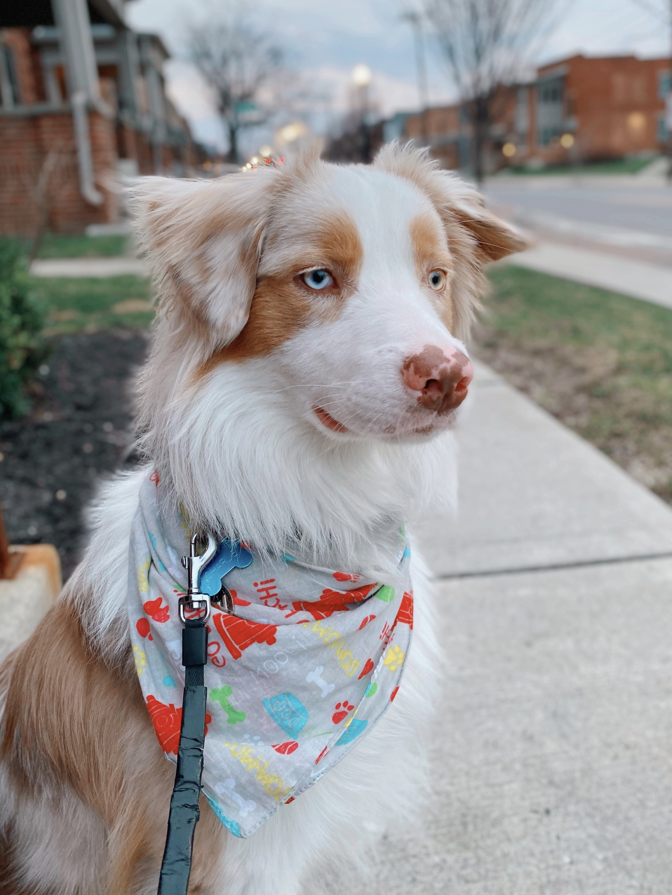

4/11/2021
Hey yall!! I cannot grasp that this year is already coming to an end. Im happy but im sad about it. My therapist suggested that
I start journaling and it has to be with a paper and pen... Its been 3 days and now I look forward to it and
I think that its starting to help me plan out my days and live in the moment a little bit more. Now that the wheather is nicer I
have been doing alot of things outside including homework whenever I can. I went to the dog park with
charlie and mike (my boyfriend of 4 years who also goes to OSU) almost everyday because its been so nice out and its
almost theraputic to sit and play with all the dogs as stupid as that sounds.
Finals are coming up and im starting to get stressed out about them and all of my projects plus im on some new meds which
is medding me up so im trying to manage through everything. Also Mike and I taught Charlie how to open doors at my apartment and boy do I regret that lol!!
There is absolutley no privacy at all haha! Anyways this was kind of a personal blog but I think it was much needed!
PS. I am taking this class again in the fall because I needed an extra class to fill my schedule for
art and tech and im so pumped bc this is probably one of my favorite classes.
